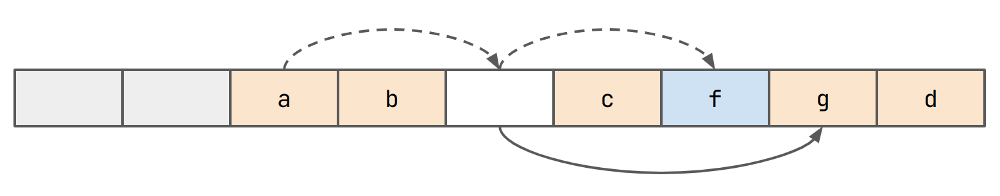

Making a Hashtable: Testing
July 18, 2024
A New Idea For Reducing Probe-lengths...
Recently, I've upgraded the hashtable project significantly. Firstly, I am now referring to them as "associative arrays", which sounds far more fancy and academic. But more importantly, I have created a proper framework that we can use to program our hashtables against. It includes a basic benchmark suite and an extensive suite of tests which can generate counter examples. I used all these tools to program a new table, which isn't very good (but failed research is still useful).
Here is a link to the repository.
Testing
The whole framework is built around one vtable struct, called
astv_array_vtable. It contains five function pointers, init() and
deinit() then insert(k, v), remove(k) and lookup(k). Sort of
exactly what you would expect. Some other operations that I didn't
bother including are clear(), clone() and some kind of iterator. It
could be nice to include something that tests iteration speed, but for
now, I'm leaving this for another day. Also, the hashtables all operate
on (keyint_t, valint_t) entries. These are currently intptr_ts.
Okay, so testing hashtables is pretty easy actually. The first thing I
did was make this exact replica of C++'s std::unordered_map...
typedef struct {
intptr_t _[7];
} cpp_std_unordered_map;
Perfect! Just kidding. We just use this as a dummy to write the actual
std::unordered_map<keyint_t, valint_t> to. We can also wrap all the
operations of std::unordered_map in C functions so that we can use
them, something like this:
void cpp_std_unordered_map_insert(void *tbl, keyint_t k, valint_t v)
{
(*(std::unordered_map<keyint_t, valint_t> *)tbl)[k] = v;
}
Next up, we can just run random operations on both our implementation
and this at the same time and wait for it to fail. Let's call this
method test_against_oracle_huge_randoms. This approach is great,
because it gives us pretty high confidence that our table works. The
issue with it is that when it fails, tracing exactly why it failed is
really _really_ hard. As a result, I did a couple extra things.
First, generate every single possible ordering of remove()/insert().
We do this for up to k = 8 and for sequences up to length 7. Values
only need to be binary (1 or 0). Using more values is basically
pointless because for any case where the value happens to be the same,
there is another combination where it isn't. After executing each
sequence on the oracle and the test table, we check that looking up
all keys up to k = 8 produces identical results.
This lets us generate _readable_ counter examples as code. Here's an example output from the test suite.
// Failed to match oracle output on below test case
int main()
{
jtable tbl;
struct astv_array_vtable vtbl = jtable_vtable();
vtbl.init(&tbl);
vtbl.insert(&tbl, 6, 0);
vtbl.insert(&tbl, 0, 1);
valint_t *v = vtbl.lookup(&tbl, 0);
assert(v != NULL);
assert(*v == 1);
vtbl.deinit(&tbl);
return 0;
}
Indeed, I found seven _different_ bugs this way! However, my code
was still not working on test_against_oracle_huge_randoms. A new
test case was needed! This time, I generate about 100-million random
counter examples for different sequence lengths and with much larger
possible keys (up to 32). This approach generated another seven
counter examples. The last one only came up after 300-million tests!
Finally, I was confident that my table was working. At the same time though, I am now totally convinced that I have almost never written correct software before this.
Benchmarking
Benchmarking is done with Google's benchmark library and then I plot
things with plotly. Exactly what kind of benchmarks one should use for
this sort of thing is a little tricky. In the end, I decided on four
options that are supposed to give you some kind of 'holistic' idea
of usage
- insert_2update_randoms
- insert N randoms in range [0, N).
- update each key twice
- insert_remove_all_randoms
- insert N randoms in range [0, N)
- remove all entries in reverse order
- insert_remove_lookup
- insert N randoms in range [0, N)
- remove N / 2 randoms in range [0, N)
- lookup N / 2 randoms in range [0, N)
- insert_remove_alt
- insert N / 2 randoms in range [0, N)
- remove N / 2 randoms in range [0, N)
- repeat 8 times
jtable
jtable is a table that aims to benefit from some level of
cache-locality that is provided by linear-probing lookup, but with
the consistency of a chaining approach. It's a failed idea, at least
in its current form. Failed research is stil research though, especially
if you learn _why_ it failed. The next article should be about trying
to make this approach work better, this one just describes it.
jtable uses a flat buffer to store everything. Let's start by
inserting a, b, c and d. We ignore values here.

Let's say that hash(e) == hash(a). In this case, we want to place e
in the same bucket.

Since we can't do this, we probe for an empty slot and insert e.
We maintain a pointer from the bucket containing a to the bucket
containing e. This represents a chain.
Intuitively, e will be close to a. The pointers should let us
skip any unnecessary comparisons though.
Further items might be added to the chain. For example consider the case
where hash(f) == hash(e) == hash(a):
Okay, but we have a problem now. What if hash(g) == idxof(e)?
Again, we probe and insert g in the slot we find.
We need to maintain another pointer from the bucket that e is in to
g now.
This way, if we need to lookup g, we first check if the bucket is
occupied with a non-head value (here marked in blue) and if it is, find
the true head in one jump. Notice also that we can do any kind of
probing we want here. One great idea would be to do double-hashing.
Remember back when I did that article about hashtable math?
I'm sure as an avid reader you do remember ;). Anyway, here I made
the assumption that given that slot i is not occupied, the chance that
slot i + 1 is not occupied is still just the load of the table.
Recall, the 'load' (lowercase
l) of the table is the percentage of the table that is occupied. The 'load-factor' (uppercaseL) is the percentage of the table that needs to be occupied for us to reallocate and rehash everything.
However, this is just not true! Let's say I have 8 slots in my buffer.
They all start off empty, so whichever one I fill (considering a totally
random hash function) is random. So let's go ahead and fill in slot 2.
A subsequent insert will select an index in the range [0, 8) at
random. However, slot 2 is occupied now. And if we choose slot 2,
we deterministically end up filling slot 3. So slot 3 is _twice_
as likely to be filled. This actually _snowballs_ really fast!